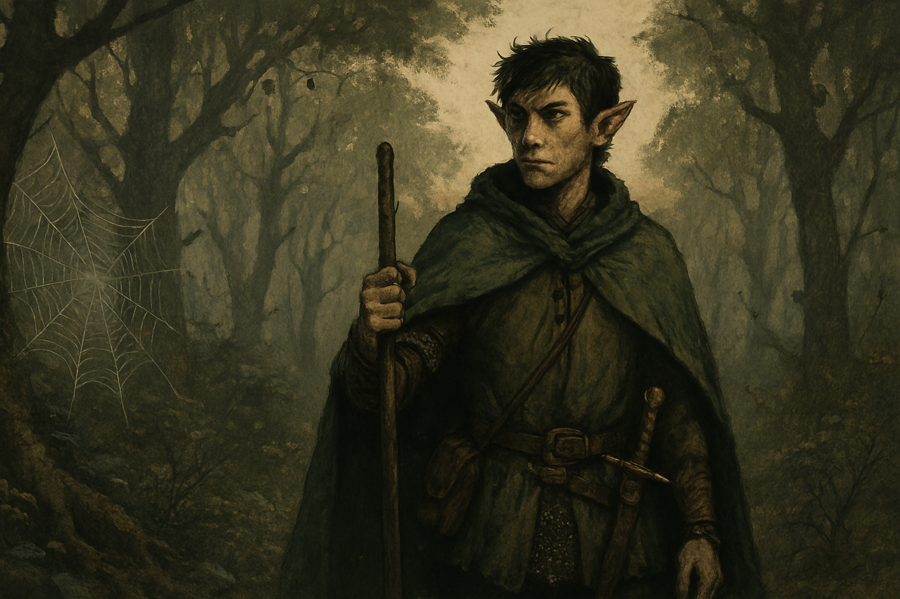

Chapter 3: I'm Sorry for Your Loss
Deep into Lothum

Deep into Lothum
15049.09.06
Lott 在 Marcus 的口袋中找到了一張紙條，是他的師父伊留給 Marcus 的文字，要 Marcus 在路上好好照顧 Lott，也相信 Lott 一定可以成為很可靠的人的。Tweeter 則找到了十顆左右 Marcus 常用的小球，先收了起來。
接著，冒險者們花了一些時間，好好在附近一處樹林邊安葬 Marcus 的遺體，而被 Lott 用力叫醒的芒果蛛則負責看管著剛被綁好的妖精，不讓他有機會脫逃。
在準備材料的途中，Lott 也得知 Ra’Leer 一直對 Marcus 有點好感，但始終沒有好好說出口，但現在也來不及了，讓 Ra’Leer 的情緒更難以消化。Lott 雖然自己已經很難過了，但他還是努力打起精神，安慰並鼓勵 Ra’Leer。
最後在放入 Marcus 遺體並鋪上土後，Tweeter 把他用木頭簡單製作的墓碑插在墓前，Ra’Leer 和 Phola 唸著 Nessis 的禱詞，為 Marcus 送上最後一程。
Tweeter 用力搧醒昏迷的妖精，想從他口中得到任何有用的消息，但沒有任何所獲，於是便把他轟死了。
因為芒果蛛已經醒了，Phola 便將嚮導的位子再還給他。一路上，大家都很沈默，身邊少了一起旅行許久，如父親角色般的 Marcus，對大家都很難受，而 Ra’Leer 則像是更加逃避般，陷入了他與 Gary 的小世界。
接近傍晚，冒險者們找了個地方休息，Tweeter、Phola 和 Pascal 分工紮營、生火和準備食物，讓 Lott、Ra’Leer 和 Gary 可以有點自己的空間休息。
晚上，Phola、Tweeter 和 Pascal 輪流與芒果蛛守夜。Tweeter 發現營帳邊開始出現一些零散的蜘蛛，朝著他們的目的地前進。距離母親大人的巢穴似乎越來越近了，但同時也代表他們距離月光狩獵會的聚集地也很近了，務必得更加謹慎。另外，Tweeter 也看見在芒果蛛的保護結界外，有兩名月光狩獵會的妖精正死盯著冒險者們。他試圖朝外攻擊，將一名妖精趕跑了，另一名則持續堅守著。輪到 Pascal 守夜時，他發現 Tweeter 的背後似乎隱隱約約可以看見有翅膀的形狀。想起之前看到 Tweeter 異色的翅膀，讓 Pascal 更加警戒。
15049.09.07
早上當 Pascal 把大家喚醒時，所有人都看見 Tweeter 背後實體化的翅膀了。Tweeter 試著用自己從書中學到拍翅的方式運作，順利的飛到空中翱翔。他看見了一條往樹林內的捷徑，走到母親大人的巢穴（有個很明顯肉眼可見的洞穴，那肯定就是母親大人的巢穴），大約只需要一天路程就能到了。而月光狩獵會的聚集地則可能不在地面上，他並沒有看到明顯的聚落。
而 Tweeter 也發現 Gary 身上的「詛咒」並沒有如他的宗主所說一命換一命那樣消失，雖然減緩了，但並沒有不見。為了不動搖 Ra’Leer，他決定先將這個秘密守住。
Tweeter 告訴大家他發現的捷徑，於是冒險者們扛著睡著的芒果蛛，繼續前進。
雨中，大家行動的速度稍有減緩，同時 Gary 的狀況也隨著時間明顯地越來越差，Ra’Leer 伴隨著走得也越來越慢。大家也不忍心催促他們走得更快些。這段路程，Lott 暫時扮演著偵察兵的角色，和 Tweeter 的夸塞魔一起提早大家一段路。但也因為要以更快的速度前進，Lott 差一點點就中了埋伏在樹林之間的妖精的箭，也幸好在接下來的路上都沒有中埋伏。在 Tweeter 用第三隻眼追蹤下，發現整條路上穿梭著不少妖精埋伏著，但對於他們的行動，似乎沒有更多的干預。除了林中的妖精外，Tweeter 也在空中偵察時發現有騎著巨鷹的妖精在盤旋。在 Phola 私下的說明下，得知有部分的妖精會用這樣的方式巡邏，但只要不硬對著他們幹，通常是不會被襲擊的。
一路到午餐時間，終於停下來的 Ra’Leer 竟然累倒了，也因此在下午啟程時，Pascal 負責抱著不支的 Ra’Leer，Phola 則在一旁護衛以及照看 Gary。雨開始變大，但也幸好除了雨勢、Ra’Leer 和 Gary 外，路程上基本上沒有什麼問題。Tweeter 突然聽見宗主對他挑釁，而與以往不同，宗主的聲音來自前方，母親大人巢穴的方向，同時也是已經睡醒，窩在 Lott 頭上的芒果蛛的方向，這讓 Tweeter 感到異常警戒，但面對能力遠在他之上的宗主，Tweeter 也只能小心而已。
晚餐時，被放下來的 Ra’Leer 才慢慢甦醒。低落的 Ra’Leer 還是以 Gary 優先，把食糧分給看起來毫無食慾的 Gary，在 Tweeter 的協助下，才成功把食物放進 Gary 的食道內，就算他沒有咀嚼的意願或能力，也得讓他吃東西才行。Ra’Leer 也在大家半哄半騙下，吃了半份的乾糧。
到母親大人的巢穴前時，雨已經停了。洞穴口是空的，Phola 提議由他待在洞外，隨時有遭遇妖精來襲時，他可以快速通報大家。對於即將見到心心念念的母親大人，Lott 的心情很複雜，這是他好久、好久以來的夢想，但同時，Lott 也在這段旅程中失去了對他而言如同爸爸般存在的 M 伯爵，還讓好朋友 Ra’Leer 最珍貴的 Gary 傷到險些損命。當然，還有戴上面具而消失的華生，不知道他現在是否安好？Lott 對於許久不見的母親大人，還是有一些不肯定。他是否已經恢復往日的強大而慈祥？是否一樣會願意用他尖銳的腳治癒倒下的夥伴？雖然不肯定，但如果走了這麼久，最後卻逃避了，那夥伴的付出與犧牲，豈不是失去了意義？
踏入洞內，Lott 走在最前面，更多的小蜘蛛爬在他身旁，像是要參加一場遊行一樣，不斷前進；Tweeter 看見除了蜘蛛之外，還有人形生物的骨頭：人類、妖精都有，而且給人一種被母親大人吃完剩下殘渣的感覺；Pascal 則看到一張他熟悉的臉，那是他的弟弟 Paladin 的臉，竟然像一張皮一樣掉落在地上，Pascal 將它拾起，小心地收在包包內，那畢竟是他的家人。
轉過轉角，Lott 深吸一口氣，終於看見了母親大人。
但是他的模樣讓 Lott 愣住了。
Tweeter、Pascal、Ra’Leer 和 Gary 轉過轉角時，也愣在了母親大人前方。
母親大人依然龐大如 Lott 所憶，但祂一隻眼睛是空洞，另一隻則有不斷蠕動的觸手從中盤出，蜘蛛腳的部分被強壯的肌肉取代，一些腳則被替換成令人不寒而慄的觸手，母親大人的身體上有不少傷口，似乎還有東西還在長出來。
「你來了啊，我的孩子。」母親大人溫柔的嗓音混雜著一股陌生的聲音，對 Tweeter 而言十分熟悉的他的宗主的聲音。
「如何？喜歡我的傑作嗎？」宗主在 Tweeter 腦中狂妄地笑著。「我把你們的母親大人照顧得很好吧？」
「噢，看起來有人需要治療呢。」母親大人用祂背後長出的兩隻觸手盤在虛弱的 Gary 身上，纏住，越纏越緊，越纏越緊，越纏越緊，越纏越緊，直到「啪！」的一聲，Gary 的腰椎硬生生斷裂，才被母親大人溫柔地放回地上。「治好了喔。」
接著，母親大人看向理智斷線的 Ra’Leer，將觸手迅速地從他的口中穿入，像是沒有底線似的，不顧 Ra’Leer 從喉嚨中勉強擠出的嗚噎聲，擠入體內，直到 Ra’Leer 的身體不斷膨脹、膨脹，再膨脹，然後從七孔中伸出祂的觸手。Ra’Leer 的身體最終破碎而掉落在地上。
「快逃啊！」Pascal 終於恢復理智，轉頭奔走，卻意外地撞上了一面「牆」，那是由無數隻小蜘蛛堆疊而成的恐怖之牆，而且異常的堅硬，Pascal 只好拿出狼牙棒揮砍。
雖然知道這是該死的宗主搞的事，Tweeter 也只能求助他的宗主。Tweeter 嘗試呼喚 Sham，卻被宗主無情的訕笑，因此他只好嘗試和宗主談交易，來解救他的夥伴。Tweeter 提出以他的情感、身體和靈魂來作為籌碼，宗主卻認為這樣的內容太沒有意思了。
母親大人的觸手用力穿過 Pascal 的腹腔，Pascal 強忍，血卻還是從口中爆出。Lott 已經穿過 Pascal 用狼牙棒劃開的開口，看見跑來幫忙的 Phola。用力抓緊 Pascal，Lott 捨不得放手。
看見隊友的慘狀，Tweeter 決定以他的存在作為交易，在交易後，世人將再也想不起他，對他的記憶完全抹消。Tweeter 順勢拿起小刀，想向後戳向已將利齒含在他脖子後的母親大人。
「我喜歡你的交易，但是，你刀子拿的方向錯了。」宗主硬是將 Tweeter 拿著小刀的手，以極其不自然的角度翻轉、扭曲，但揮動的力道還在，小刀就這樣重重戳入 Tweeter 的內臟，然後用力一扭。
母親大人的第二擊，直接從後方穿入 Pascal 的心臟。Lott 感受到他抓緊的手已經鬆了，含淚往前奔跑，然後被一團紫色厚重的漩渦包圍，接著 Lott 就失去意識了。
15051.05.09
後續的兩年間，Lott 每一晚都在夢中重演那一天發生的悲劇。
他記得與他相同陣線的 Ra’Leer、Gary、Pascal 一一倒下，還有在那之前的 M 伯爵、華生、Sugalu、Paladin 等人。他們的臉都還那麼清晰，但卻永遠聽不見他們的聲音了。
好像還有一個人，但是……為什麼怎麼想都想不起來？為什麼？
夜晚孤獨而讓人心碎，但是當太陽再次升起，Lott 也知道自己得堅強的活下去，背負著夥伴們生存的意志，也為了自己。
Lott 知道自己成長了，在依靠別人之後，也該成為別人的依靠了。